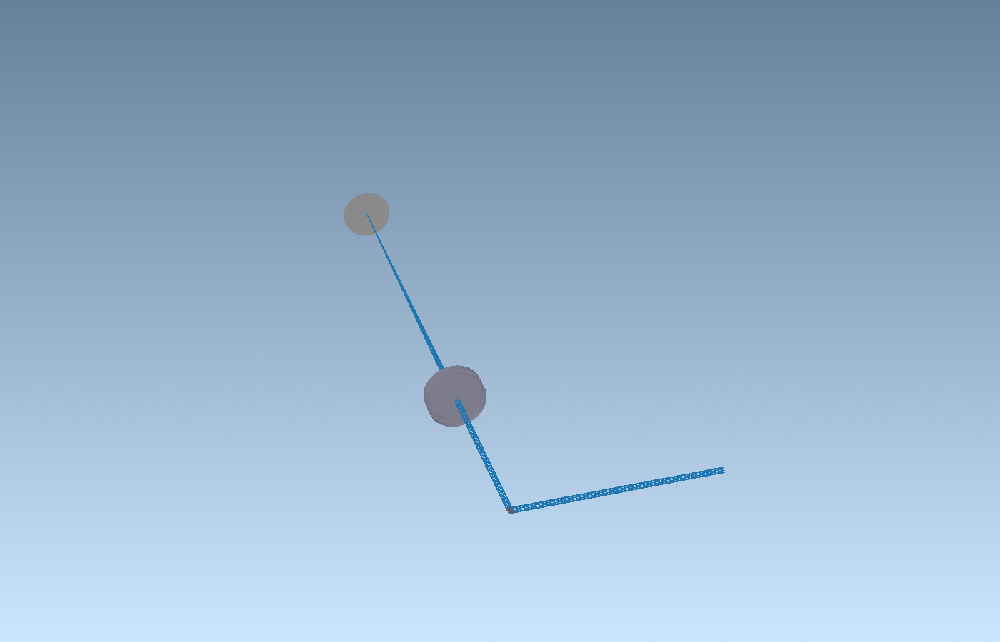
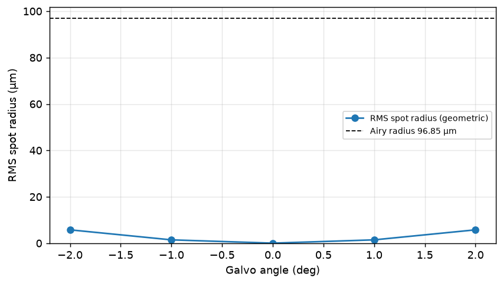
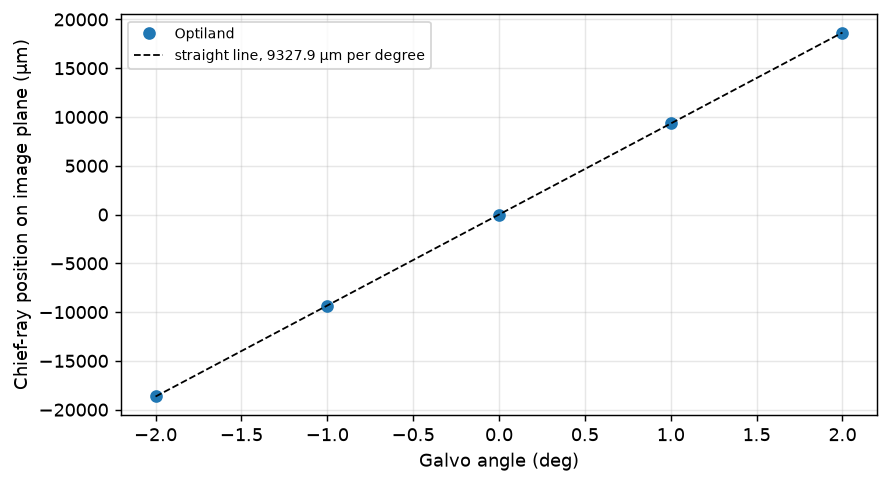

Optiland vs Zemax
TWINKLE tube lens (alone): Optiland against Zemax
The tube-lens pair of the TWINKLE excitation path on its own, with a collimated 4.39 mm beam and 6 small galvo configurations. This is the one TWINKLE file where Optiland's wavefront and PSF tools run, because the galvo is at 0° in configuration 1.
- Wavefront, PSF, Strehl and FWHM. Works on axis only (Strehl 0.998); blocked for the tilted configurations. Cause: Optiland's paraxial engine (issue 8; upstream roadmap #865). Upstream: #865 (roadmap, with our comment), #1210.
- Galvo angles and tilted surfaces on import. Only configuration 1 loads and the tilted dichroic is ignored unless our workaround rewrites the file first. Anything loading these files without the workaround is silently wrong. Cause: Optiland's Zemax reader silently drops them (issues 5 to 7). Upstream: #1247.
Zemax check: verdict by quantity
Zemax stores, for every surface whose semi-diameter is automatic, the largest ray radius it computed. We re-trace the same file in Optiland (all fields and wavelengths, 40-ring hexapolar pupil) and take the largest local ray radius. Those values come from the file itself, so they are exact Zemax output, not read off a plot. Status is computed from the tolerances in comparison.json: match within 0.5%, partial within 5%.
| Quantity | Zemax | Optiland | Difference | Result |
|---|---|---|---|---|
| Semi-diameter, surface 1 (mm)Zemax: DIAM stored in the .ZMX (computed by Zemax) | 2.1950 | 2.1950 | 0.00% | Match |
| Semi-diameter, surface 10 (mm)Zemax: DIAM stored in the .ZMX (computed by Zemax) | 2.1813 | 2.1813 | 0.00% | Match |
Surface 4: Zemax 2.1950 mm, Optiland 3.1042 mm. The stored Zemax value (2.195 mm) is exactly the bare beam radius (2.195 mm), what a mirror at normal incidence would give, not the 1.414 x larger footprint on a 45 degree mirror. Every later surface agrees with Optiland to four digits, and the excitation file's value for the same mirror and beam (3.1042 mm) equals Optiland's 45 degree footprint. We think this stored value was not refreshed after the break was inserted; the cause is not established.
Optiland detail: what works
| Requirement | Status | Notes |
|---|---|---|
| Load the file | Works | Loads. |
| Galvo angle (6 configurations) | Works, patched | Written into the file text and reloaded for each angle. |
| Real-ray trace, all 5 distinct angles | Works | 1801 of 1801 rays reach the image at each. |
| Semi-diameter on automatic surfaces | Works | Matches on the lens surfaces. The galvo mirror is not scored (see above). |
| EFL | Works | -378.8 mm in Optiland's sign convention (reversed propagation). No Zemax value to compare. |
| FFT PSF, Strehl on axis | Works | Strehl 0.998 at 0° (diffraction-limited). |
| PSF off axis (tilted configurations) | Blocked | Paraxial engine rejects the tilt (issue 8). |
System layout
WorksDrawn by this repository from Optiland's surface positions, sags and ray coordinates (Optiland's own draw fails on folds, issue 9). Glass is filled between surfaces, thick black lines are mirrors, the brown arrow-line is the ideal objective and the dashed line is the image plane. Everything is projected onto the plane of the folds.

Interactive 3D

Loading 3D model…The scene from Optiland's own VTK 3D viewer, rendered offscreen and exported as glTF. Drag to rotate, scroll to zoom, right-drag to pan.
Spots against galvo angle
WorksImage NA 0.0058, Airy radius 97 µm. On axis the geometric RMS radius is 0.02 µm; at ±2° it is 5.8 µm, still far below the Airy radius.



Optiland issues found
Full details are in optiland_issues_found.md (issues 5 to 10 are new with these designs).
- 5. Surface tilts (SCBD) ignored. The tilted dichroic loads untilted, with no warning. Patched locally Upstream: #1247.
- 6. Parameter pickups (PPAR) ignored. Only matters when a value is edited. Patched locally Upstream: #1247.
- 7. Multi-configuration data dropped. Only configuration 1 loads; the galvo angles are configurations. Worked around Upstream: #1247.
- 8. Paraxial engine refuses tilted systems. Blocks wavefront, PSF and Strehl on the tilted galvo systems. Open Upstream: #865 (roadmap, with our comment), #1210.
- 9. 2D layout mangles folded systems. This page draws its own projection. Worked around Upstream: not yet filed.
Semi-diameters, every automatic surface
The same comparison as the verdict table, with the ratio, including any row that was not scored.
| Zemax surface | Comment | Zemax (mm) | Optiland (mm) | Ratio | |
|---|---|---|---|---|---|
| 1 | 2.1950 | 2.1950 | 1.0000 | ||
| 4 | 2.1950 | 3.1042 | 1.4142 | not scored | |
| 10 | 2.1813 | 2.1813 | 1.0000 |
Lens data
Prescription as stored in the Zemax file (coordinate breaks left out; Optiland absorbs them into the neighbouring surfaces). The Optiland radius is read back from the loaded model, so a difference would show an import error. Thicknesses are signed Zemax values: negative after a mirror.
| Zemax # | Comment | Type | Radius, Zemax (mm) | Radius, Optiland (mm) | Thickness (mm) | Glass | Semi-diameter (mm) | Clear aperture (mm) |
|---|---|---|---|---|---|---|---|---|
| 0 | STANDARD | ∞ | ∞ | ∞ | 0 | |||
| 1 | STANDARD | ∞ | ∞ | 20 | 2.195 | |||
| 4 | STANDARD | ∞ | ∞ | 0 | MIRROR | 2.195 | ||
| 7 | STANDARD (stop) | -1330.5 | -1330.5 | -2 | SF2 | 25.4 (fixed) | 25.4 | |
| 8 | STANDARD | -336 | -336 | -4.5 | N-BK7 | 25.4 (fixed) | 25.4 | |
| 9 | AC508-750-A | STANDARD | 417.8 | 417.8 | -4 | 25.4 (fixed) | 25.4 | |
| 10 | STANDARD | ∞ | ∞ | -0 | 2.181 | |||
| 11 | STANDARD | -1330.5 | -1330.5 | -2 | SF2 | 25.4 (fixed) | 25.4 | |
| 12 | STANDARD | -336 | -336 | -4.5 | N-BK7 | 25.4 (fixed) | 25.4 | |
| 13 | STANDARD | 417.8 | 417.8 | -373.9935 | 25.4 (fixed) | 25.4 | ||
| 14 | STANDARD | 113.236 | 113.236 | 0 | 0 |
Reproduce
export UV_PROJECT_ENVIRONMENT=~/uv_venvs/evaluation_mac uv run python -m evaluation_tools.analyze_zmx designs/twinkle_tube_lens # about 1 to 3 minutes uv run python -m evaluation_tools.build_summary # regenerates all HTML
zemax_text.py holds the workarounds for features Optiland ignores (tilted surfaces, pickups, configurations). analyze_zmx.py runs the analysis and build_generic.py writes this page. The Zemax files come from the TWINKLE repository.